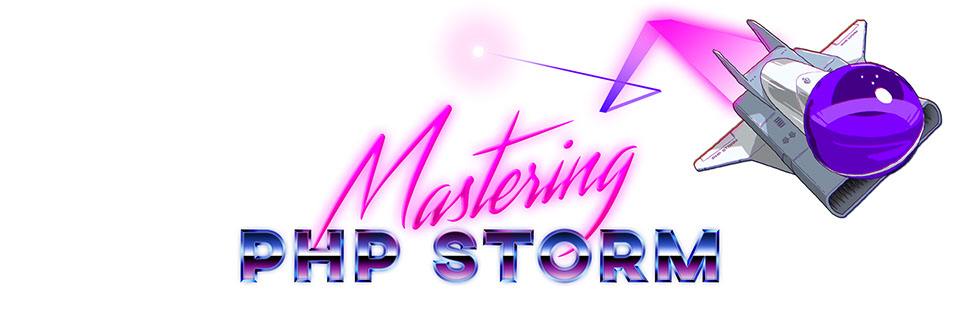
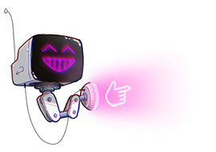
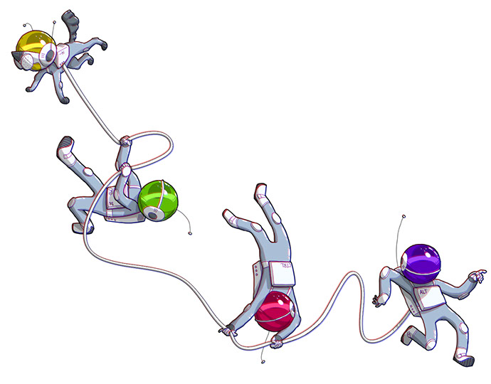
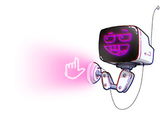

Mastering
PHP Storm
masteringphpstorm.comNach dem großen Erfolg von Laravel Core Adventures und viel positivem Feedback, musste das Nachfolgeprojekt - professionelle Tutorials zu PHP Storm - natürlich auch einen Anstrich mit viel Charakter bekommen. So war das ALTronautenteam mit dem hilfsbereiten Roboter 3NT-R geboren - inspiriert von Cartoons der 80er Jahre.


der mit Tips zu Seite stehende Roboter 3NT-R (Enter)
Für uns als Kinder der 80er war es ein Genuss, uns mit der Ästhetik unserer Kindheit zu beschäftigen und eine ganze Website damit zu gestalten.